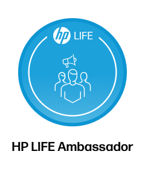
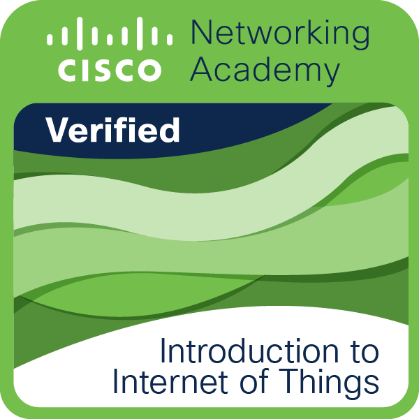
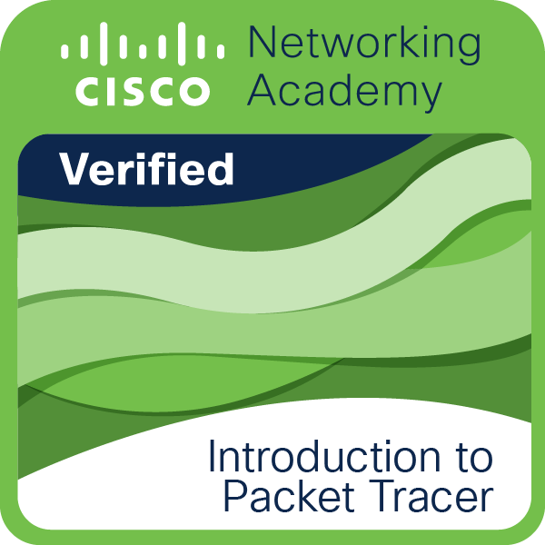
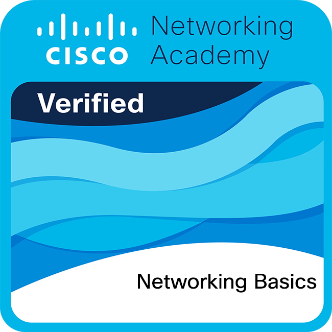

IT Support
Troubleshooting technical issues, understanding computer systems, and helping users solve IT problems.
ICT STUDENT · FUTURE PROBLEM SOLVER
I’m Lizalise Hlangani, an ICT student specialising in Application Development. I turn what I learn into websites, connected networks, and practical solutions.
// A little about me
const student = {
name: "Lizalise Hlangani",
focus: [
"Application Development",
"Networking",
"IT Support"
],
mindset: "Keep learning"
};
WHAT I BRING
Troubleshooting technical issues, understanding computer systems, and helping users solve IT problems.
Learning network configuration, connectivity troubleshooting, and network infrastructure.
Building applications and websites while improving my programming, database, and problem-solving skills.
CONTINUOUS LEARNING
Building my ICT knowledge through networking, Internet of Things, digital technology, and professional development.

Developing professional, business, and digital skills.

Learning the fundamentals of the Internet of Things and connected devices.

Exploring network simulation and virtual networking labs.

Building a foundation in networking concepts and communication.
Learning about networking devices and their initial configuration.
LEARNING IN ACTION
A growing collection of practical work, technical experiments, and projects that demonstrate what I can do.
My personal portfolio built with HTML, CSS, and JavaScript to showcase my technical skills and professional work.
HTML · CSS · JavaScriptExplore project ↗Practical networking exercises exploring device configuration, IP addressing, and network connectivity.
Cisco Packet TracerExplore project ↗HAVE AN OPPORTUNITY?
Whether you have a job opportunity, a project, or an idea to discuss, I'd love to hear from you. Send me a message and let's start a conversation.